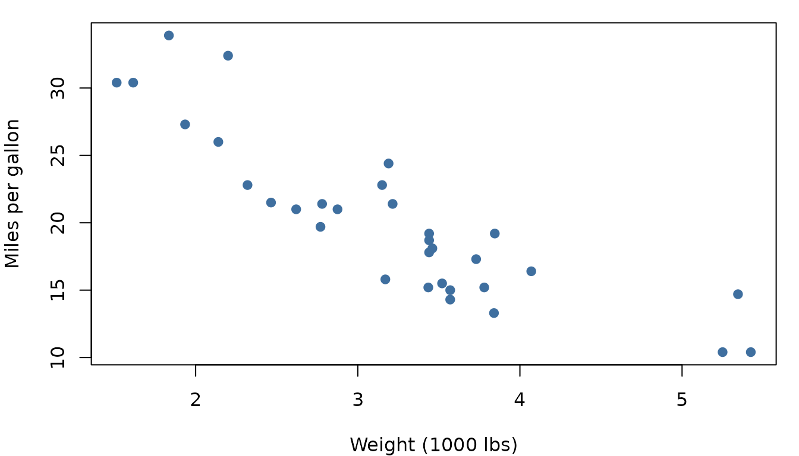

Use the light switch in the top-right of the navbar to flip between light, dark, and auto modes. Every element on this page is styled for both.
Prose and inline elements
This is a normal paragraph of body text set in
Inter. It mixes emphasis, strong
emphasis, a link to
pkgdown, and a bit of inline_code() to show the
muted-blue code chip. Headings are set in Outfit with
slightly tightened letter-spacing for a sleeker feel.
Blockquotes get a muted-blue accent bar on the left, which reads cleanly against both the light off-white and the dark navy backgrounds.
Code blocks
Fenced code blocks are framed with a rounded border that matches the
rest of the page. The token colours come from the
arrow-light / nord syntax themes, which track
the active colour mode:
# A short, plain example
nums <- rnorm(100, mean = 5, sd = 2)
summary(nums)
#> Min. 1st Qu. Median Mean 3rd Qu. Max.
#> -0.2247 4.2878 5.1821 5.1416 6.2468 10.5108A non-evaluated block, to show pure syntax highlighting:
Tables
| mpg | cyl | disp | hp | drat | |
|---|---|---|---|---|---|
| Mazda RX4 | 21.0 | 6 | 160 | 110 | 3.90 |
| Mazda RX4 Wag | 21.0 | 6 | 160 | 110 | 3.90 |
| Datsun 710 | 22.8 | 4 | 108 | 93 | 3.85 |
| Hornet 4 Drive | 21.4 | 6 | 258 | 110 | 3.08 |
| Hornet Sportabout | 18.7 | 8 | 360 | 175 | 3.15 |
| Valiant | 18.1 | 6 | 225 | 105 | 2.76 |
A plain Markdown table renders the same way:
| Mode | Background | Primary |
|---|---|---|
| Light | #fbfcfe |
#3f6f9f |
| Dark | #0f141b |
#7ea8d6 |
Figures
op <- par(mar = c(4, 4, 1, 1))
plot(mtcars$wt, mtcars$mpg,
pch = 19, col = "#3f6f9f",
xlab = "Weight (1000 lbs)", ylab = "Miles per gallon"
)
par(op)